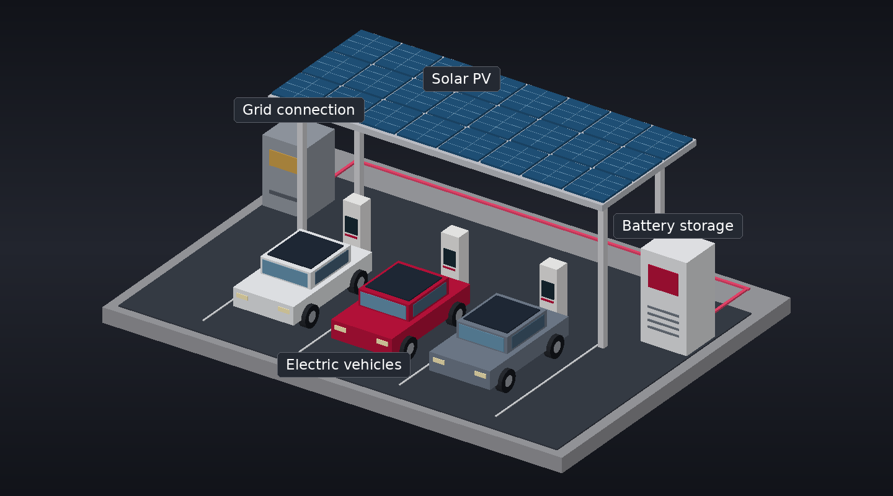

Interactive 3D · Smart charging
Inside a smart EV charging station
Explore solar generation, electric vehicles, battery storage and the grid connection in a charging-station energy system.

Select a component to explore its role.
The model image is ready. Interactive controls load when available.
Applied Energy · 2025
Efficient Management of Electric Vehicle Charging Stations: Balancing user preferences and grid demands with energy storage systems and renewable energy
Read publication ↗Publication citation
Anis ur Rehman, J. Lu, B. Du, F. Bai, and M. J. Sanjari, “Efficient Management of Electric Vehicle Charging Stations: Balancing user preferences and grid demands with energy storage systems and renewable energy,” Applied Energy, vol. 393, pp. 126147, 2025.